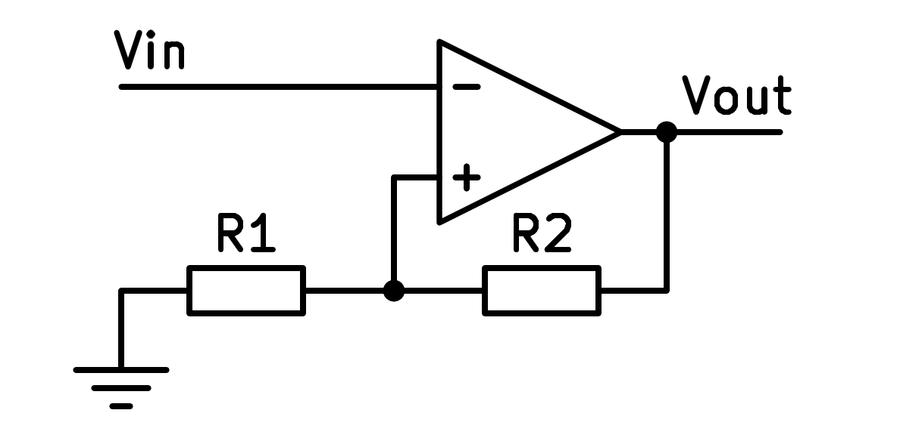

23. El comparador amb la histèresi¶
El circuit comparador amb histèresi utilitza un amplificador operatiu amb retroalimentació ** positiu ** per obtenir la comparació per tenir dos valors d’encesa i circuit separats.
Aquesta separació entre el valor d’encesa i el valor OFF s’anomena ** histèresi **.
{kind=link}

Esquema simplificat d’un comparador amb histèresi.¶
Operació¶
El circuit sense la resistència R2 funciona igual que un comparador tradicional, que compara la tensió "vin" amb la tensió terrestre.
Afegint resistència R2, afegim comentaris positius, perquè R2 està connectat entre la sortida i el terminal d’entrada positiva. Aquest feedback positiu té el resultat de reforçar la tensió de sortida.
Si la sortida és positiva, el terminal d’entrada V+ serà positiu i la tensió d’entrada VIN haurà de ser superior a zero perquè la sortida torni a ser negativa.
Per contra, si la sortida és negativa, el terminal d’entrada V+ serà negatiu i la tensió d’entrada VIN haurà de ser inferior a zero per aconseguir que la sortida torni a ser positiva.
El resultat és una separació entre el valor d’entrada que produeix una sortida positiva i el valor d’entrada que produeix una sortida negativa.
Simulació¶
En la simulació següent podem veure un comparador amb el funcionament d’histèresi com a control d’una calefacció:
- El LED de sortida representa el calefactor escalfador del recinte.
- La resistència R1 representa el termòstat en què podem canviar la temperatura desitjada del recinte.
- La resistència R3 representa el sensor de temperatura ambient.
- La resistència R4 proporciona una retroalimentació positiva i és el que produeix histèresi.
En augmentar el valor de temperatura en R3, el LED acabarà extingint de manera que la temperatura del recinte disminueixi.
Si en aquest cas disminuïm el valor de la temperatura en R3, el LED acabarà activant -se de manera que augmenti la temperatura del recinte.
Si eliminem la resistència R4, el circuit és un comparador tradicional que compara la tensió de referència R1 amb la tensió R2 i R3, que és un sensor de temperatura.
Amb R4 connectada, l’encesa i les temperatures fora de joc no coincideixen, però es separen diversos graus, que s’anomena ** temperatura d’histèresi **.
Si tant les temperatures d’encesa com en desactivació consideren, la calefacció s’encendria i s’apagaria contínuament, molt sovint, i això podria danyar -la.
Exercicis¶
Com és el comparador amb la histèresi del comparador tradicional? Expliqueu les diferències de funcionament i disseny del circuit.
Quina és la tensió o la temperatura de la histèresi?
Què hi ha més gran en aquest circuit simulat, la temperatura d’encesa o la temperatura fora?
En una nevera, què serà més elevada, la temperatura d’il·luminació o la nevera? Justifiqueu la vostra resposta.
Simula el canvi de temperatura del termistor R3 per comprovar com es comporta el circuit. La llum del díode vermell representa l’encesa d’un escalfador.
A quina temperatura s’encén l’escalfador?
A quina temperatura s’apaga l’escalfador?
Per què hi ha aquesta diferència entre ells?
Canvieu la resistència R4 a un valor inferior (100K). Què passa amb la histèresi?
Canvieu la resistència R4 a un valor més gran (800K). Què passa amb la histèresi?
Quins avantatges i quins inconvenients heu d’utilitzar menys histèresi al circuit de calefacció?
Canvieu el valor de la resistència variable R1 de manera que la calefacció funcioni entre els intervals de 20ºC i 22ºC.
Mantingueu la resistència R4 amb el valor de 800K de l'any anterior.